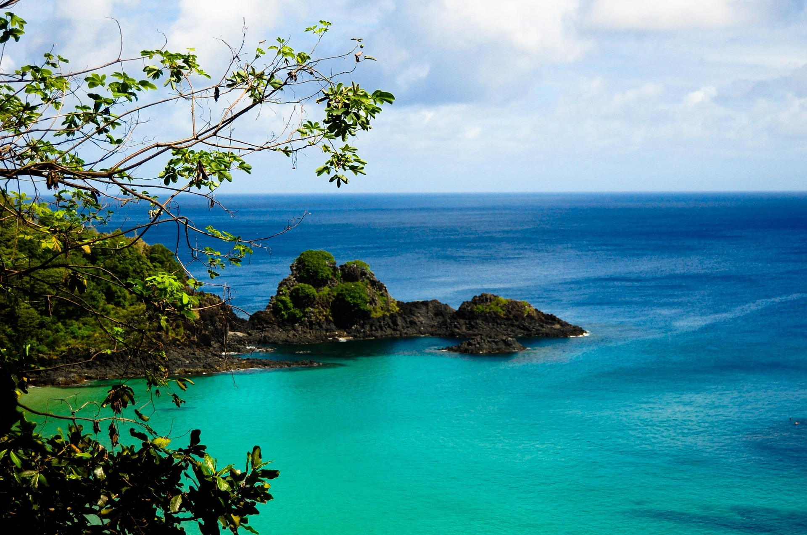
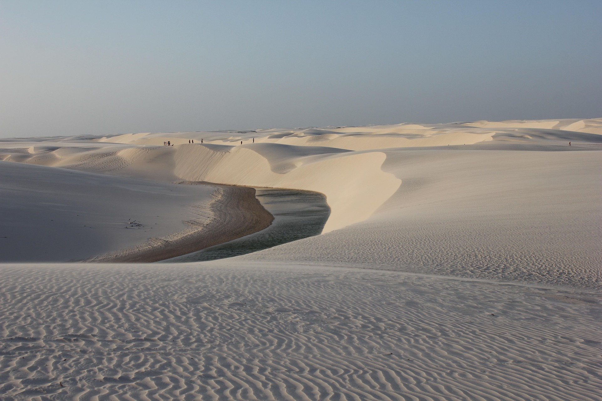
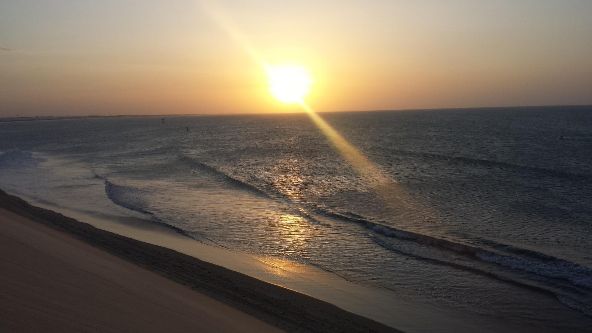
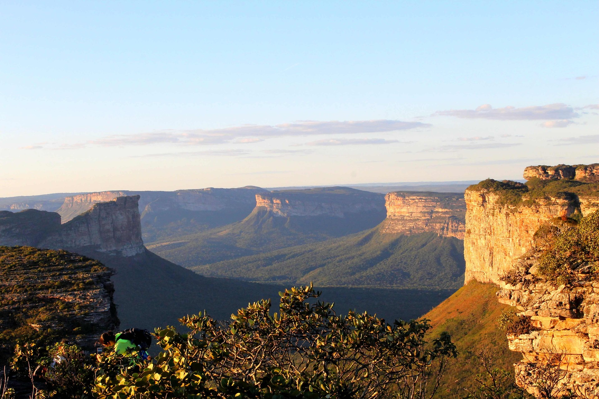

| Fernando de Noronha (PE) | |
|---|---|
 |
Fernando de Noronha é um convite ao encantamento em família,
com praias de águas calmas e transparentes, ideais para snorkeling mesmo com crianças pequenas. É possível
observar tartarugas marinhas, golfinhos e uma rica vida marinha em passeios de barco pensados para todas as
idades. Combinando natureza preservada, segurança e experiências educativas, o arquipélago se torna um destino
inesquecível para famílias que valorizam sustentabilidade e aventura responsável. Possíveis passeios
|
| Lençóis Maranhenses (MA) | |
|---|---|
 |
Um verdadeiro espetáculo da natureza que encanta visitantes
de todas as idades, os Lençóis Maranhenses oferecem lagoas de águas claras e mornas, perfeitas para as
crianças nadarem com tranquilidade em meio às dunas brancas. Os passeios em veículos 4x4 pela região são uma
aventura à parte, e a paisagem única cria memórias inesquecíveis para toda a família. Um destino que mistura
contemplação, diversão e contato genuíno com a natureza. Possíveis passeios
|
| Jericoacoara (CE) | |
|---|---|
 |
Jericoacoara combina paisagens deslumbrantes com um clima
tranquilo, ideal para famílias que buscam relaxar sem abrir mão da aventura. As dunas suaves são ótimas
para passeios de bugue com as crianças, e as lagoas de água doce oferecem banhos seguros e divertidos para
os pequenos. Assistir ao pôr do sol na Duna do Pôr do Sol é um programa imperdível, unindo todos em um
momento especial ao ar livre. Possíveis passeios
|
| Chapada Diamantina (BA) | |
|---|---|
 |
Para famílias que amam aventura e natureza, a Chapada
Diamantina é um verdadeiro parque a céu aberto. Há trilhas de diferentes níveis de dificuldade, incluindo
opções mais leves e acessíveis para crianças e idosos, além de cachoeiras com poços naturais perfeitos
para um banho refrescante em família. Visitar grutas iluminadas e cânions impressionantes se torna uma
aula de geografia na prática, unindo diversão e aprendizado para todas as idades. Possíveis passeios
|
| Porto de Galinhas (PE) | ||
|---|---|---|
 |
Porto de Galinhas é o
destino perfeito para viajar com a família toda. Suas piscinas naturais
de águas mornas e cristalinas são ideais para as crianças brincarem com
segurança, enquanto observam peixinhos coloridos entre os recifes de
corais. A vila conta com uma ampla estrutura de pousadas, restaurantes
e passeios de jangada, tornando tudo mais prático para quem viaja com
filhos pequenos. À noite, a rua principal se transforma em um point
animado, com opções de lazer para todas as idades. Possíveis passeios
|